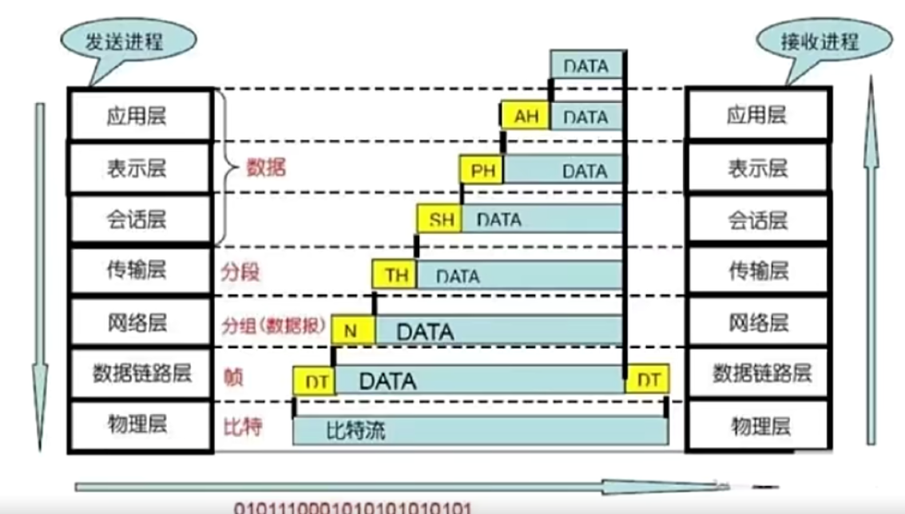

为了更系统的学习面试所获涉及到的知识点，我从剑指Java面试-Offer直通车进行学习并做笔记
计算机网络
OSI开放式互联参考模型
ISO制定OSI七层协议模型
物理层
第一层 物理层
机械、电子、定时接口通信信道上的原始比特流传输
比特流在机器间的传输
物理层定义了物理设备的标准：网线类型、光纤接口类型、传输介质的传输速率
将比特流转换成电流强弱进行传输 ： 数模转换与模数转换
数据：比特
代表：网卡
TCP/IP协议簇：ISO2110、IEEE802、IEEE802.2
数据链路层
第二层 数据链路层
物理寻址，同时将原始比特流转成逻辑传输线路
解决问题
- 错传
- 数据传输不完整
作用
- 格式化数据
- 控制对物理介质的访问
- 错误检测与纠错
对帧解码，根据帧中的信息，将帧中的信息发送到正确的接收方
代表：交换机
TCP/IP协议簇：SLTP、CSLIP、PPP、ARP、RARP、MTU
网络层
第三层 网络层
控制子网的运行。如逻辑编址、分组传输、路由选择
将网络地址转成物理地址，决定如何将数据从发送方路由到接收方
网络层考虑
- 发送优先权
- 网络拥塞程度
- 服务质量
- 可选路由的花费
代表：路由器
数据：数据包
IP协议
将发送的数据切割为segment进行发送
TCP/IP协议簇：IP、ICMP、RIP、OSFP、BGP、IGMP
传输层
第四层 传输层（OSI模型中最重要的一层）
接受上一层的数据，在必要的时候把数据进行分割，并将这些数据交给网络层，且保证这些数据段有效到达对端
解决主机间的数据传输（主机可以在不同的网络中）
解决传输质量的问题
传输协议进行流量控制、根据接收方接受数据的快慢规定适当的发送速率。
根据网络所能处理数据的最大尺寸，对数据包进行强制分割
例如：以太坊所能传输的数据包大小最大为1500字节，发送方传输层对数据包分割成数据片，同时对每一个数据片编号，以便接受方传输层能按正确的顺序组合起来
TCP/IP协议簇：TCP、UDP
会话层
第五层 会话层
不同机器上的用户之间建立和管理会话
管理应用程序之间的通信
自动收发包，自动寻址
表示层
第六层 表示层
信息的语法语法语义以及它们的关联、如加密解密、转换翻译、压缩解压缩
解决不同系统之间通信语法问题，将数据按照网络能理解的类型进行格式化，同时根据不同的网络进行不同的格式化
应用层
第七层 应用层
应用层网络协议规定接收方和发送发使用按照规定的消息头，同时消息头要求包含消息体的长度等信息，以便接收方能够解析消息
应用层的作用在于更加方便的解析数据
数据的传递可以不需要应用层
http协议
TCP/IP协议簇：HTTP、Telnet、SMTP、FTP、TFTP、SNMP、DNS

OSI模型不是标准，而是制定标准的时候采用的概念性的框架
TCP/IP协议
TCP/IP协议不仅仅指TCP协议、IP协议。有时候例如FTP、HTTP、UDP等也属于TCP/IP协议中，一起构成一个协议簇
TCP/IP协议也称网际协议
TCP/IP协议是一个四层的体系结构：应用层、传输层、网络层、数据链路层
TCP/IP协议的应用层相等于OSI模型中的应用层、表示层、会话层
TCP/IP协议的传输层相等于OSI模型中的传输层
TCP/IP协议的网络层相等于OSI模型中的网络层
TCP/IP协议的数据链路层相等于OSI模型中的数据链路层和物理层
OSI协议注重通信协议必要的功能是什么
TCP/IP协议强调实现协议应该开发哪种程序